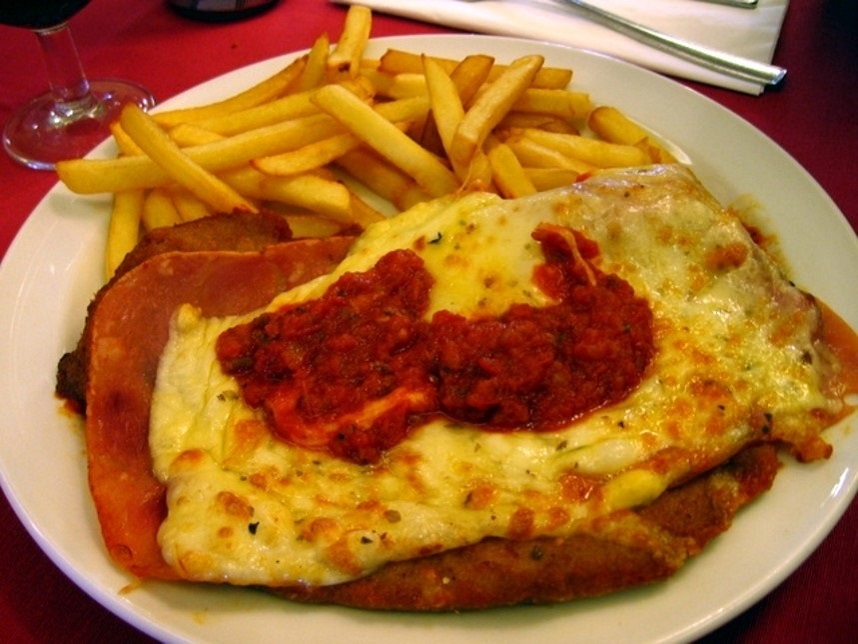
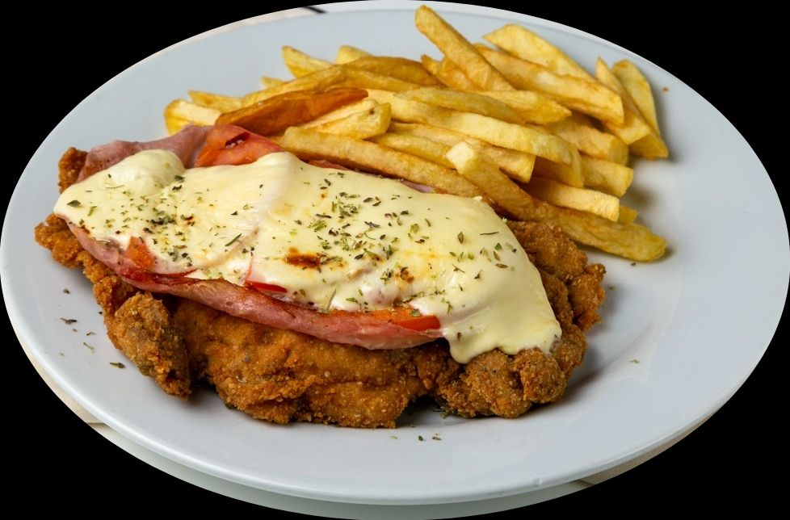

La milanesa napolitana con papas fritas es uno de los platos más representativos de la gastronomía argentina.
Combina la clásica milanesa de carne vacuna —empanada y frita— con una irresistible cobertura de salsa de tomate, jamón cocido y queso derretido, acompañada de papas fritas doradas y crocantes.
Este plato no solo es un emblema en los hogares argentinos, sino también una opción infaltable en bares, bodegones y restaurantes de todo el país.
Ingredientes
Para la Milanesa:
Uno o dos bife/s de nalga o cuadrada (carne vacuna, finos)
2 huevos
2 dientes de ajo picados
2 cucharadas de perejil picado
Sal y pimienta a gusto
Pan rallado (cantidad necesaria)
Aceite para freír
Para la napolitana:
200 g de jamón cocido
200 g de queso mozzarella
1 taza de salsa de tomate
Orégano seco a gusto
Para las papas fritas:
4 papas medianas
Aceite para freír
Sal a gusto
Preparación
Golpear los bifes para que queden finos y tiernos.
En un bol, batir los huevos con el ajo, perejil, sal y pimienta.
Pasar los bifes por la mezcla de huevo y luego por pan rallado, presionando bien.
Freír las milanesas en aceite caliente hasta que estén doradas de ambos lados. Retirar y colocar sobre papel absorbente.
En una bandeja, poner las milanesas fritas, cubrir con una cucharada de salsa de tomate, una feta de jamón y una de mozzarella.
Espolvorear con orégano y gratinar en el horno hasta que el queso se derrita.
Mientras tanto, pelar las papas, cortarlas en bastones y freírlas hasta que estén doradas y crocantes.
Servir las milanesas napolitanas acompañadas con papas fritas.


Lugar de Origen
A pesar de su nombre, no proviene de Nápoles, sino que nació en Buenos Aires (1940)
Según la historia popular, fue creada por accidente en el restaurante “Nápoli”, frente al estadio Luna Park.
El cocinero, al intentar recuperar una milanesa que se había quemado, decidió cubrirla con salsa de tomate, jamón y queso para disimular el error.
El resultado fue tan delicioso que rápidamente se convirtió en un éxito.